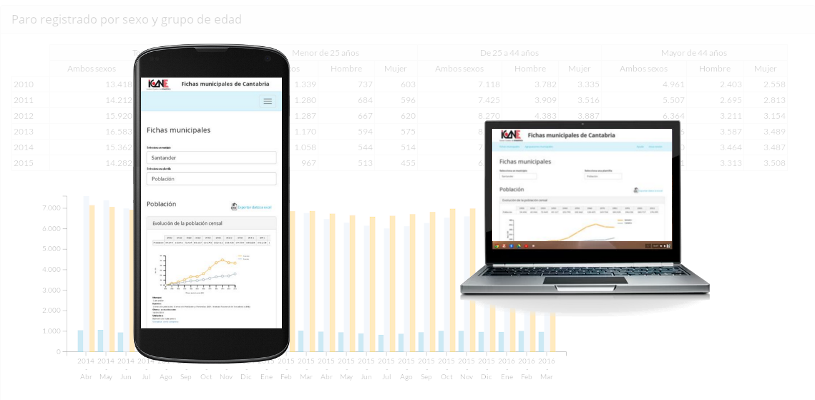

fichas municipales
de Cantabria


Acceso al repositorio con la presentación
URL de la presentación: http://icane.github.io/munreport
Lorena Campo Moreno, Técnica de Estadísticas Socio-demográficas
Miguel Expósito Martín, Jefe de Sección de Informática Estadística y Banco de Datos